Overview
| Note: Take into notice that the IIS platform is not officially supported by ProcessMaker. The installation on Internet Information Server has been included under the experimental section, since this installation has NOT being tested by ProcessMaker QA department. |
This guide explains how to install ProcessMaker 3.0.x in Windows Server 2012 R2 using Information Internet Services (IIS).
Step 1: Installing IIS
First, open Server Manager and select Local Server.
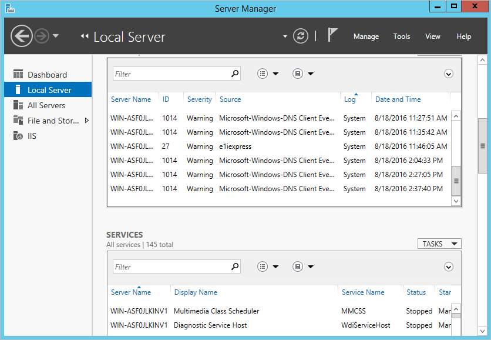
Go to "Manage > Roles and Features" at the top right side of the window.

In the next window, go to step Installation Type and select Role-based feature-based installation. Then, click on Next.
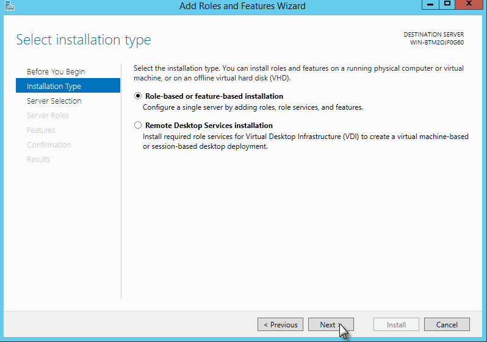
In the next step "Server Selection", choose the option Select a server from the server pool and select the current server.
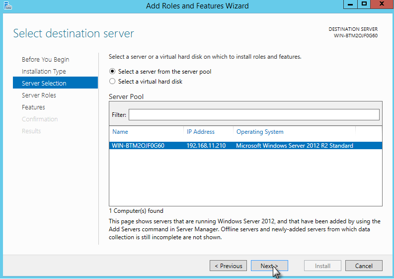
In the "Server Roles" dialog, check the option Web Server (IIS).
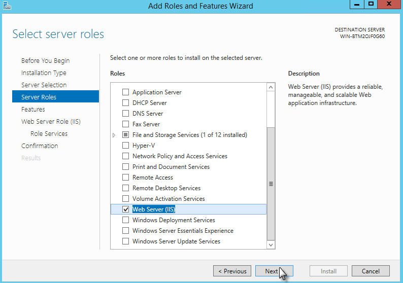
After checking the Web Server option, a new dialog window will open. Make sure the checkbox is marked and click on Add Features.
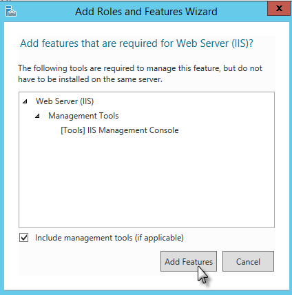
Click Next in the main dialog, and the "Select Features" step will be displayed. No additional features are needed for IIS, so click on Next to proceed.

On the next dialog, information about Web Server Role (IIS) will be introduced. Click on Next to continue.
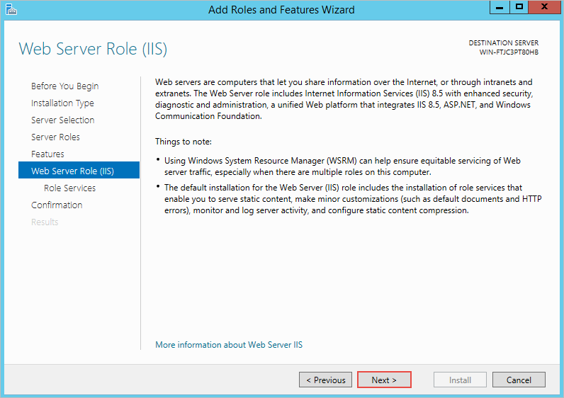
Now, in the "Role Services" dialog, scroll down and select the Application Development option. Expand its options by clicking on the arrow and from the list that is displayed, select the options ASP, CGI, and ISAPI Extensions as shown in the image below. Once done, click on Next.
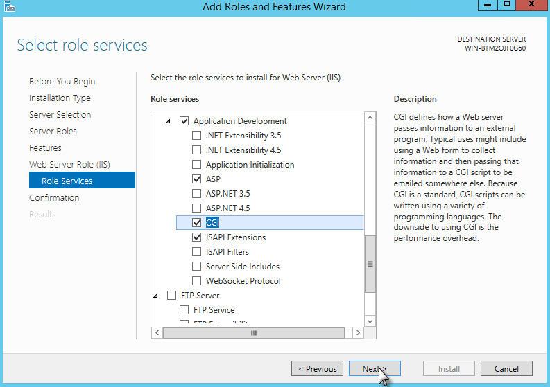
A final confirmation dialog will be shown with the details of the roles that will be installed next. Click on Install to continue.
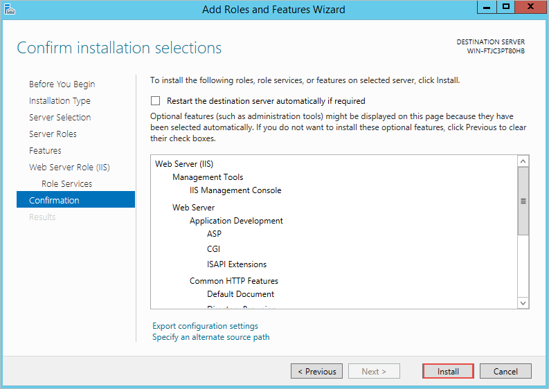
Once the IIS installation completes, the wizard will reflect the installation status.
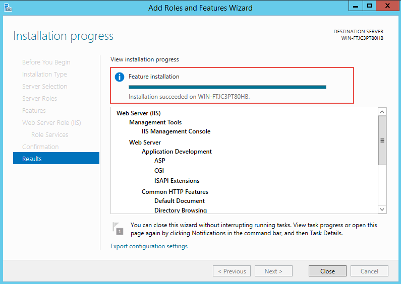
To verify that the IIS server was installed, look for the "Internet Information Services (IIS) Manager" under the "Tools" menu on the "Server Manager" window.

The "Internet Information Services (IIS) Manager" will open.

In the same way, when accessing to "localhost" through your favorite browser, the following page will be displayed:
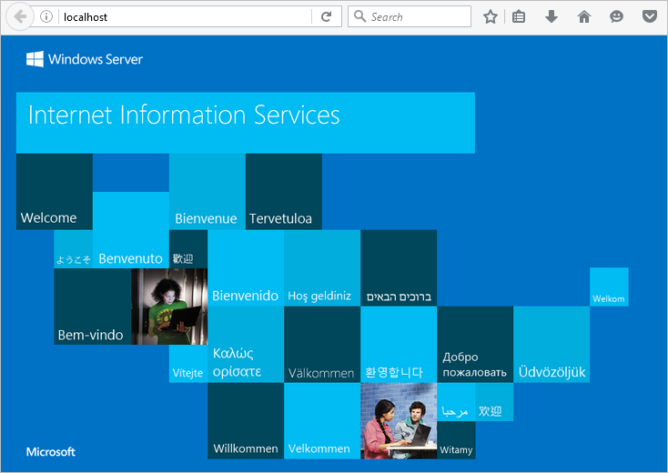
Step 2: Installing URL Rewrite 2.0
To install URL Rewrite 2.0 in the server, first the "Microsoft Web Platform Installer" must be installed. For this, go to Microsoft Web Platform Installer page and download the last version of this product and install it.

Once the installation has been completed, open the Web Platform Installer and go to the Products tab. In the search box enter "URL Rewrite" and press Enter.
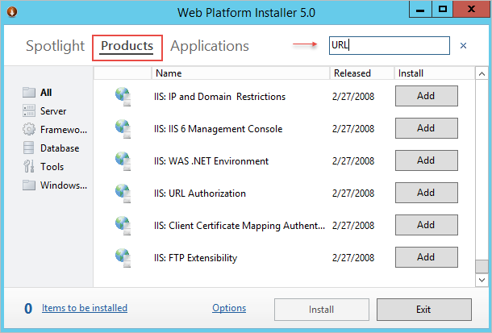
The options will be listed below. Click on the Add button at the right side and then click on Install at the button.
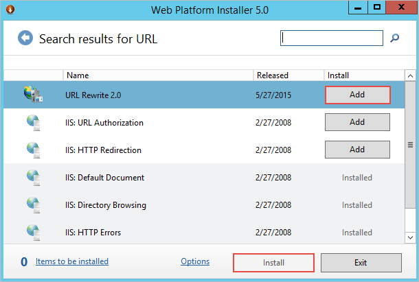
Click on I Accept in the window that is opened with the details of the installation

Wait until the product is downloaded and installed in the computer. Click on Finish once done.
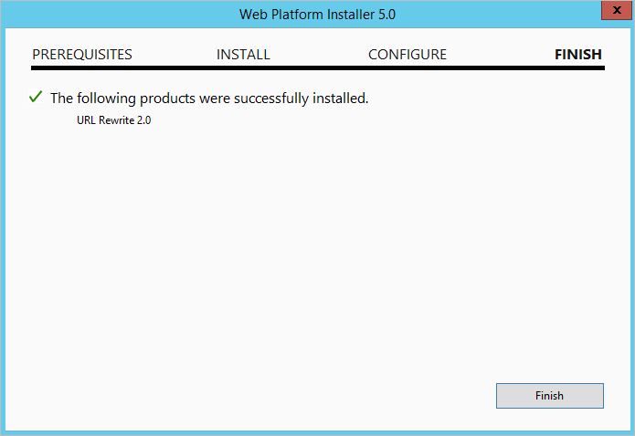
Step 3: Installing PHP
Restrictions about PHP
Please take notice of the following PHP restrictions:
- ProcessMaker does NOT support PHP 7.
- In some hosted servers the get_headers and apache_request_headers functions may be disabled, this will cause ProcessMaker's API doesn't work properly since REstler library uses those functions. Make sure to have those functions enabled.
- Windows Operating Systems x86 only supports 32-bits timestamps. The valid range of a 32-bits timestamp is typically from Fri, 13 Dec 1901 20:45:54 UTC to Tue, 19 Jan 2038 03:14:07 UTC, using out of range values may cause issues. For more information about this problem, go here.
- Experimental x64 builds of PHP 5 in Windows x86 do not provide 64-bit integer or large file support.
- Prior to PHP 5.1.0, not all platforms support negative timestamps, therefore your date range may be limited to no earlier than the Unix epoch. This means that e.g. dates prior to Jan 1, 1970 will not work on Windows, some Linux distributions, and a few other operating systems. For Windows Operating Systems x64 with 64-bit versions of PHP, the valid range of a timestamp is effectively infinite, as 64 bits can represent approximately 293 billion years in either direction.
Download & Configuring PHP
To install ProcessMaker, the php_ldap.dll extension is required. This extension is unfortunately not included with the default PHP installation when PHP is installed via the Web Platform Installer. Therefore, it is neccesary to install PHP manually.
Go to the PHP downloads page and search for the PHP 5.6.X.zip installer (x86 or x64 bits version depending on your system) and download always the Non-Thread Safe version. For instance, currently, the latest version is PHP 5.6.24.
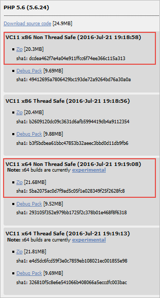
Remeber, it is important the download the Non-Thread Safe version, according to the PHP page recommendation.
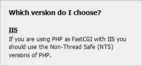
Once downloaded, create a new folder named "php5.6.X" in disk C:\ and unzip the content of the php-5.6.X-Win32-VC11-x64 file inside.
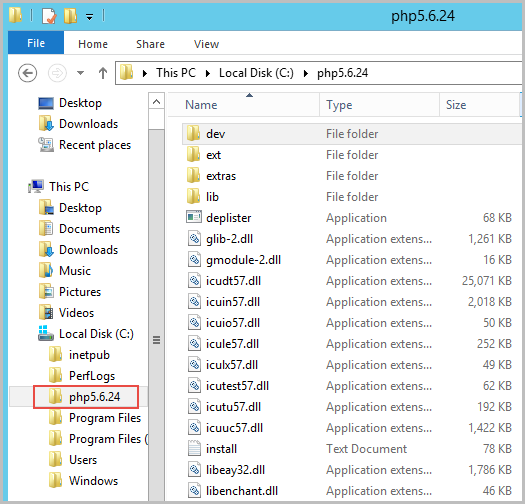
Add the PHP installation directory to the %PATH% environment variable. To do this, go to System Properties > Advanced > Environment variables.
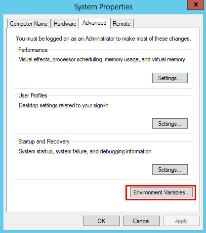
Select the variable Path (case-insensitive) and click on the Edit button.

Add a semi-colon (;) at the end of the line and add the full system path of the PHP installation: C:\php5.6.X. Click on OK on all the dialogs to close them.
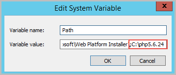
Go to C:\php5.6.X\, make a copy of php.ini-development and rename it as php.ini.
After this, open php.ini with any text editor such as Notepad and uncomment the following modules (remove the ; symbol at the beginning of each line):
In addition to that, search for the following lines and edit their values using the following configurations:
Save the changes and close the file.
After that, go to “Internet information Service Manager”, select the current server and open the option Handler Mappings.
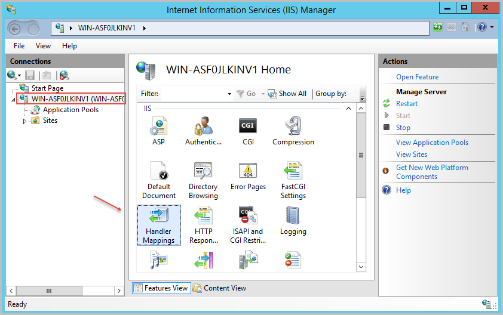
Click on Add Module Mapping at the right side of the window.

Fill in the following information in the window that opens.
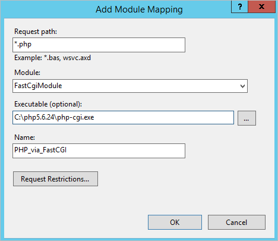
In the same window, click on Request Restrictions and select File or Folder. Once done, click on Ok on the two dialogs to save the configuration.
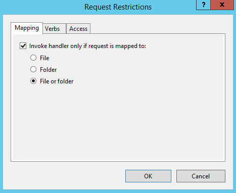
A confirm dialog will display, click on Yes and the module mapping will be saved.
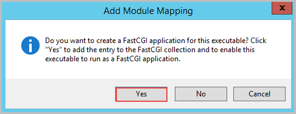
Finally, open the CMD (Windows Command Terminal) as an administrator and execute the following command to restart the IIS service:

Step 4: Installation of MySQL
| Warning: ProcessMaker is not compatible with MySQL STRICT mode, which is enabled by default as of MySQL 5.6.6. Read the Turning Off MySQL STRICT Mode section to learn how to disable it. |
ProcessMaker uses MySQL as its DBMS (Database Management System). The IP address or domain of MySQL will be set when installing ProcessMaker in the step Database Configuration.
First, open the Web Platform Installer, go to the Products tab and select the Database option. Enter "MySQL" in the search field at the top right-hand side of the window and press Enter.
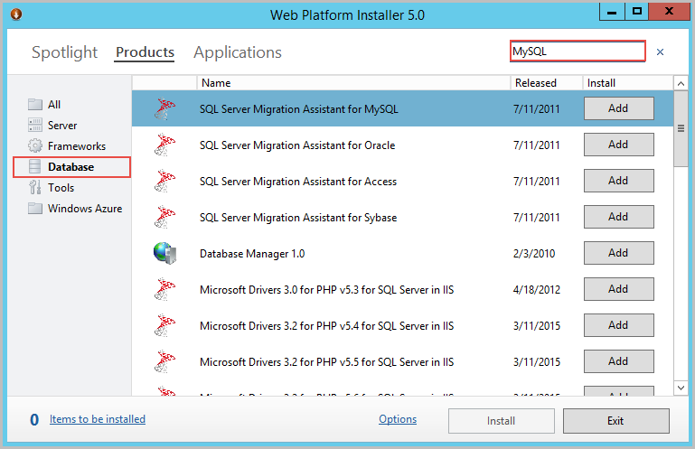
When the results are shown, select MySQL 5.5, click on Add and then click on Install at the bottom of the window.
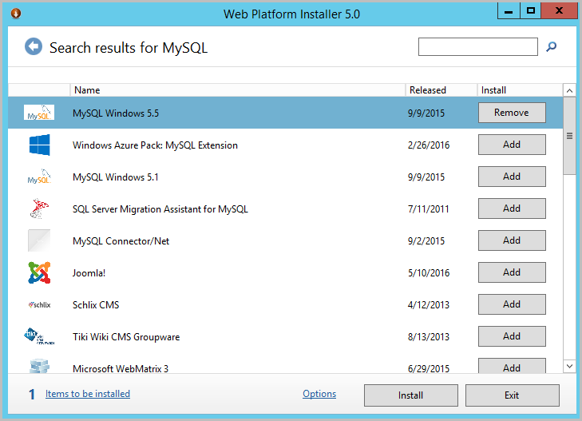
Set the password for the database in the window that is displayed and click on Continue.
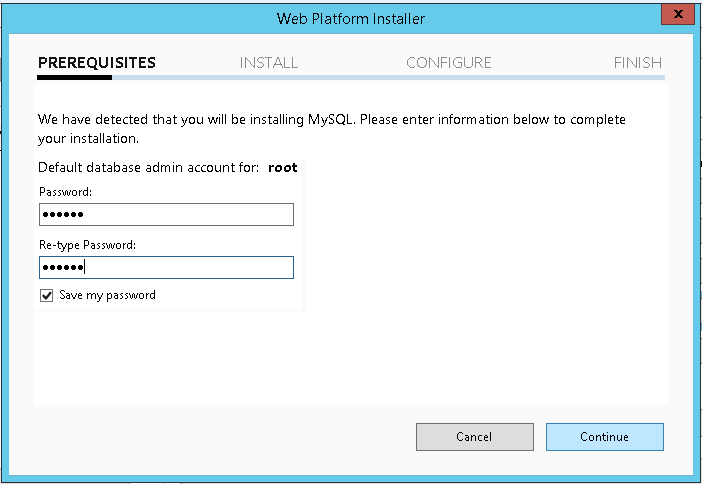
Click on I Accept in the next window with the details of the installation and the product will be downloaded and installed in the local server.
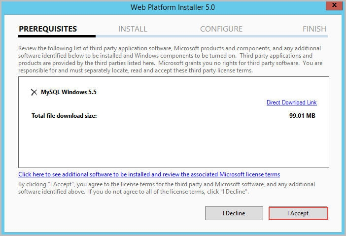
Once done, click on Finish and close the "Web Platform Installer".
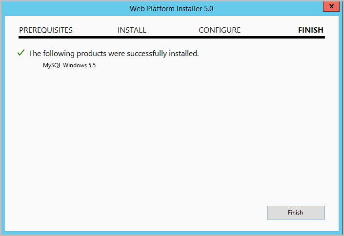
Step 5: Installing Visual C++ 2012
Go to the Visual C++ Redistributable for Visual Studio 2012 Update 4 page.
Select the language of the Operating System and click on the Download button.
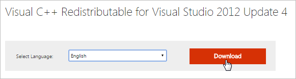
Select the vcredist_x64 or vcredist_x86 file (depending on your system) and click on the Next button at the right-corner of the dialog screen. The download process of the file will begin automatically.
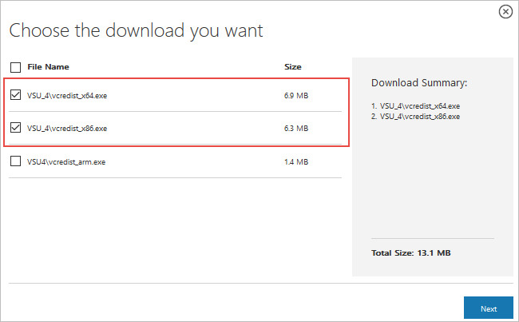
Once downloaded, install the "vcredist_xXX.exe" file downloaded as administrator.
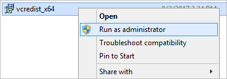
Step 6: Setting up ProcessMaker on IIS
Download the most recent ProcessMaker tar.gz file (latest current is 3.0.1.8) from ProcessMaker's SourceForge page.
Create a new folder named "processmaker" in the disk C:\ and decompress the content of the .tar.gz inside.
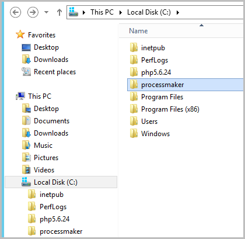
Open the Internet Information Services (IIS) Manager once again, go to Sites at the right side menu and remove the Default Web Site.

After that, go to the left-side menu and click on Add Website....
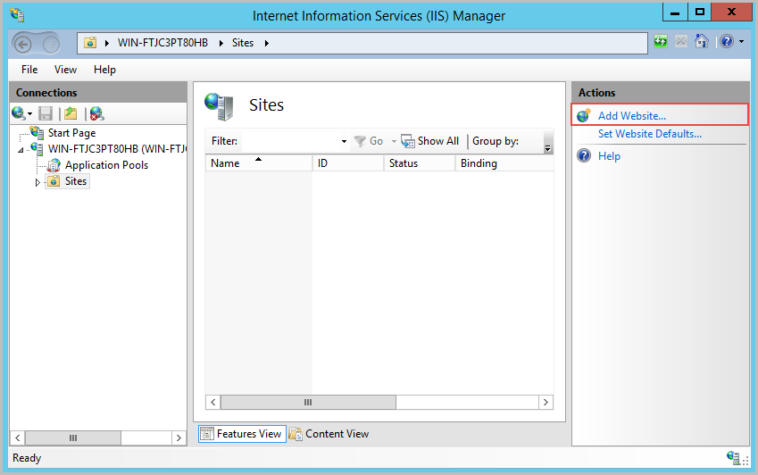
In the next window, fill the fields according to the following parameters shown below:

Test the settings to check the authentication, once reviewed close the dialog window and click on "Ok" to save the configuration.
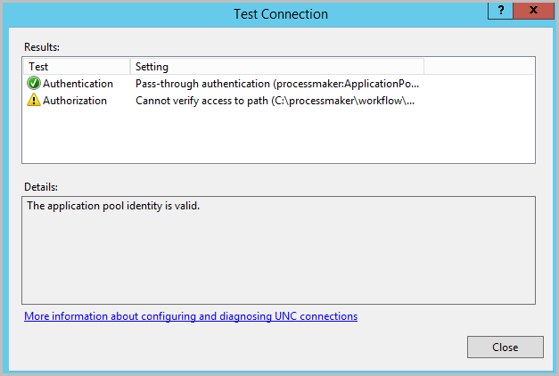
In the "Internet Information Services (IIS) Manager" main window, select the new site created "processmaker" and in the "processmaker Home" section, make double-click on URL Rewrite.
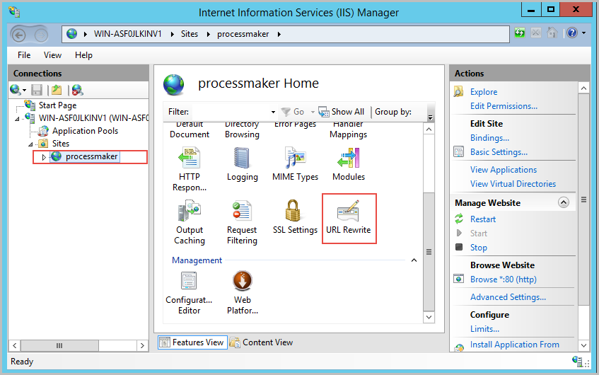
Make sure that the following rule is configured as follow by selecting it and making click on Edit. If no rule is found, create a new one with the following parameters.
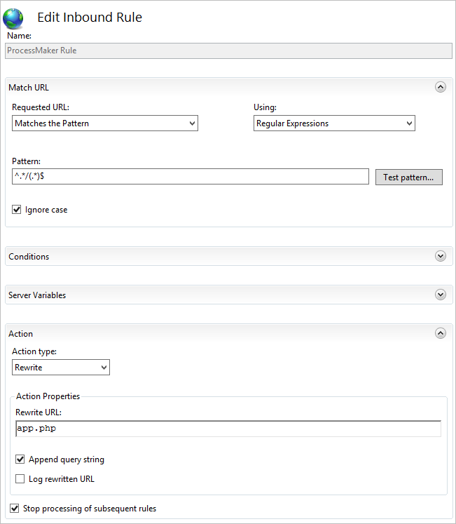
After that, restart IIS going to CMD and executing the command iisreset
Set the corresponding permissions to the ProcessMaker file in C:\processmaker by right clicking on it and going to "Properties > Security > Edit".
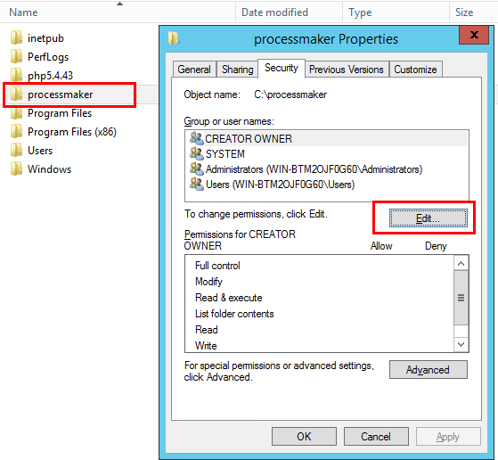
Click on "Add".
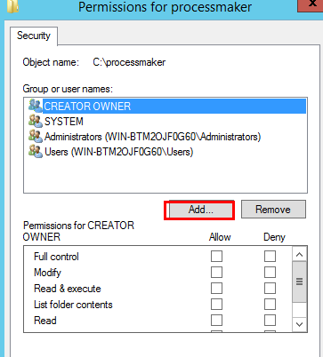
Enter the name "Everyone" in the "Select Users or Groups" window that is opened next.
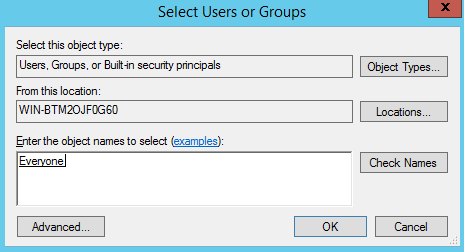
Make sure to give "Full Control" to this user.
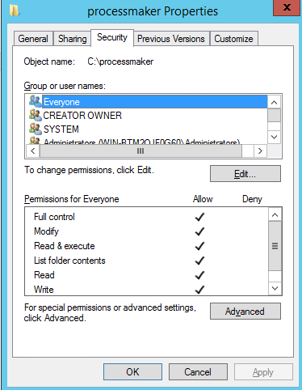
Once all ProcessMaker configurations were set up, open a web browser and enter the IP address. For instance, http://localhost/.
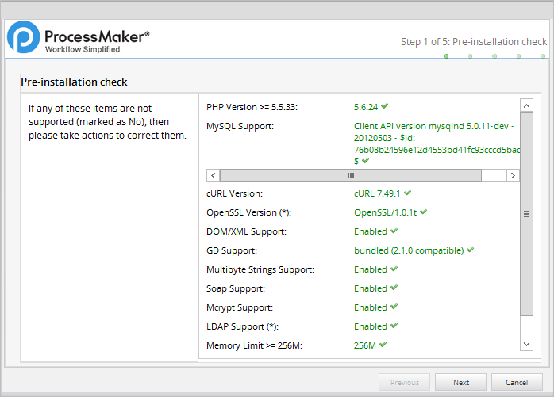
Then follow the steps in the Installation Wizard in the web browser to complete the installation of ProcessMaker.